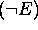
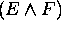
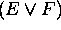
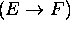
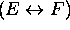
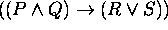
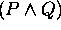
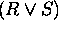

Recursive Definition
Recursive Definition of Proposition
A proposition (also called
propositional form) here is a template for propositions.
It is a 'legal' form for propositions. Every proposition must take one of these
forms. It shows how larger more complex propositions can be generated from simpler
ones.
Definition of Proposition (Propositional Form)
1. Basis Clause: The truth values 'true' and 'false', and all
propositional variables
such as P and Q are a proposition. Here a propositional
variable
is a variable that takes
an individual specific proposition as its value.
2. Inductive Claus: If E and F are propositions, then
 ,
 ,
 ,
 , and
 are
propositions.
3. Extremal Clause: Nothing is a proposition unless it is obtained by 1. and 2.
Note : As you might have noticed, [ ] and ( ) are used interchangeably for propositions.
Example
 , where P, Q, R, and
S are propositional variables, is a proposition because
it can be obtained by first generating  , and 
by applying the inductive clause to the propositional variables P and Q,
and R and
S, respectively, then by combining them with  agian applying the inductive clause.
agian applying the inductive clause.